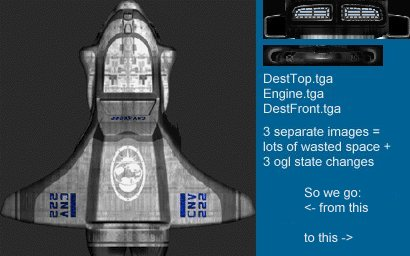
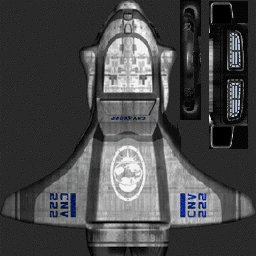
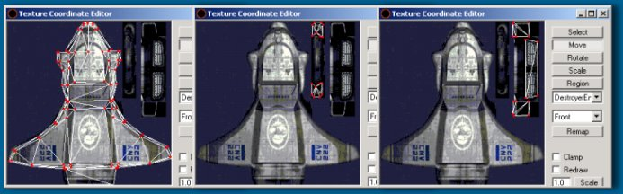

|
|
no lightwave
loader? If you've been here before then you'll know about my lightwave object loader. I'm sorry to say that I've put it on temporary hold - I'll keep the source in case I win the lottery or something.
You see, for lightwave to be any good, you have to pay pounds and pounds for plugins-to-do-this and
plugins-to-do-that. Plus I've only got an ancient
amiga version and fiddling around with emulators and such is a pain (especially
when you have a broken monitor like mine).
i'm
still not convinced There is a deeper, even more compelling reason though. It's the texture coordinates. Generating our own was a nice little exercise, but it was pretty pointless. Most developers and artists use special tools to UV map their objects these days.
Let's look at [independence war's] destroyer object again. The texture map below has lots of wasted
space. The two smaller textures could easily fit into the void.
 |
 |
Remember that every time we upload a texture by using glBindTexture we are performing an opengl state change and these can be slow. If we could put all our little textures into the wasted space around the picture of the hull and somehow fudge the texture coordinates then we wouldn't need half as many separate images. This saves us rendering time by cutting down on state changes. Even better, it also saves us valuable texture memory on the video card.
[milkshape] and [uview] are two programs that let you assign texture coordinates directly to surfaces. The difference is that milkshape costs $20, while uview costs $799. The real stinger is that if you want to use uview with lightwave, the plugin that imports and exports UV coordinates costs a further $99!
Now that my friends, is extortion.

Using a system like the two described above, means
that we can select where the
renderer is too look in the image for the texels. In the three images
above you can see the polygons in each surface have been moved, scaled and
rotated to fit the parts of the image we need. Website and
content, Paul Groves
If you were hell-bent on reading lightwave files you could write a program that
lets you choose areas to texture map on the image (like in milkshape, above).
These values could be exported as a file containing the size of the bounding
boxes for each of the sub-textures. It wouldn't be that difficult...
Destroyer model taken from [Independence
War] Copyright (c) 1999, 2000 [Particle
Systems] and Infogrames. Used with permission.